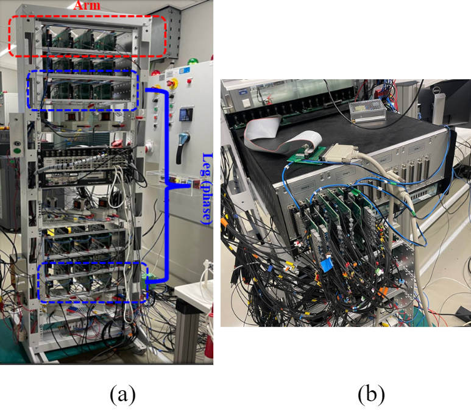
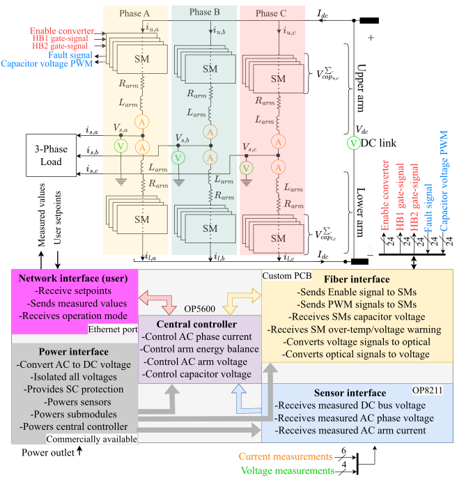
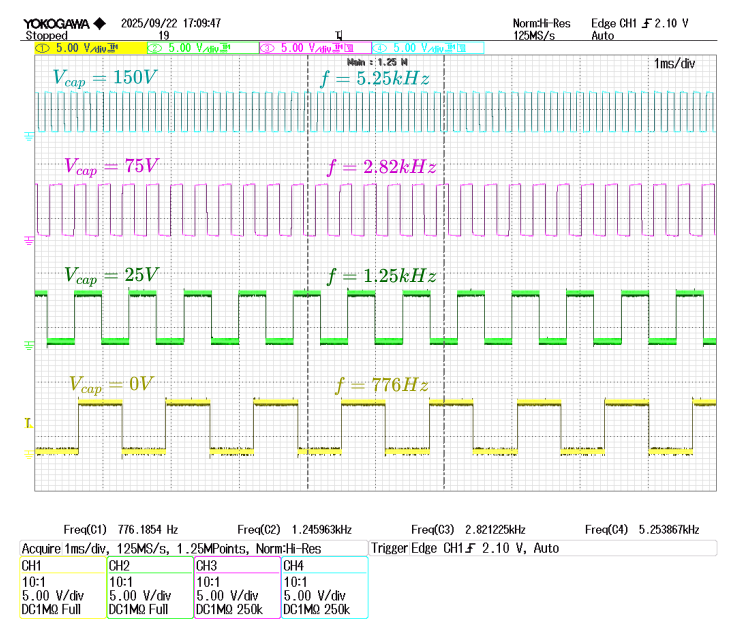
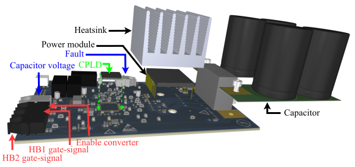
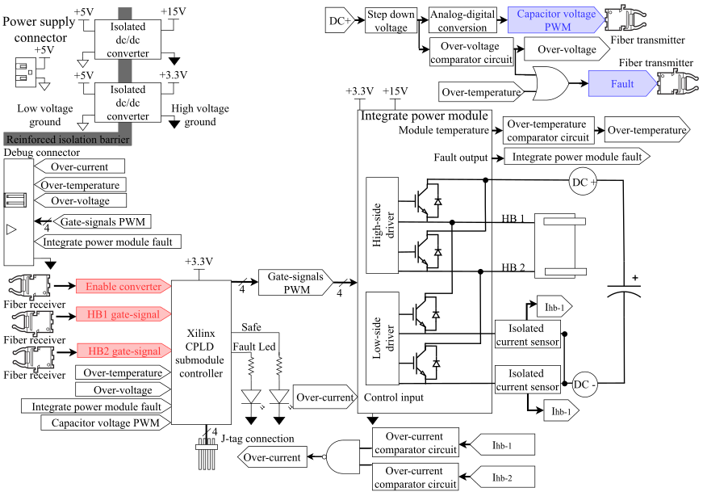
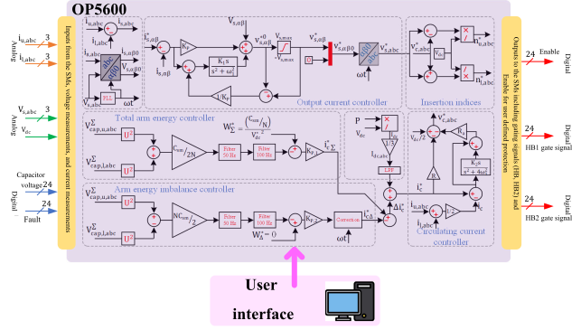
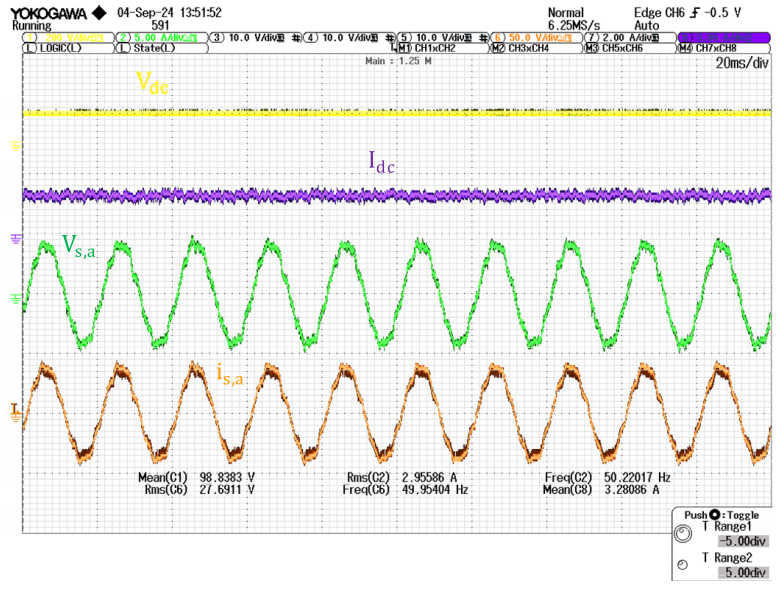
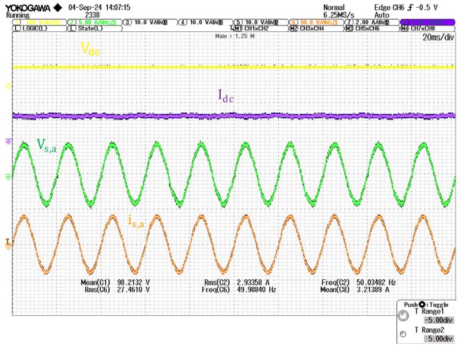
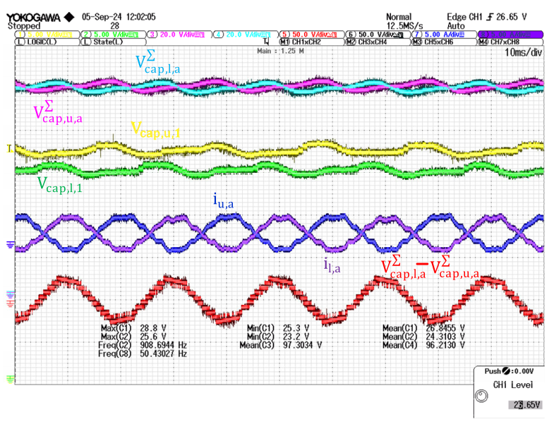
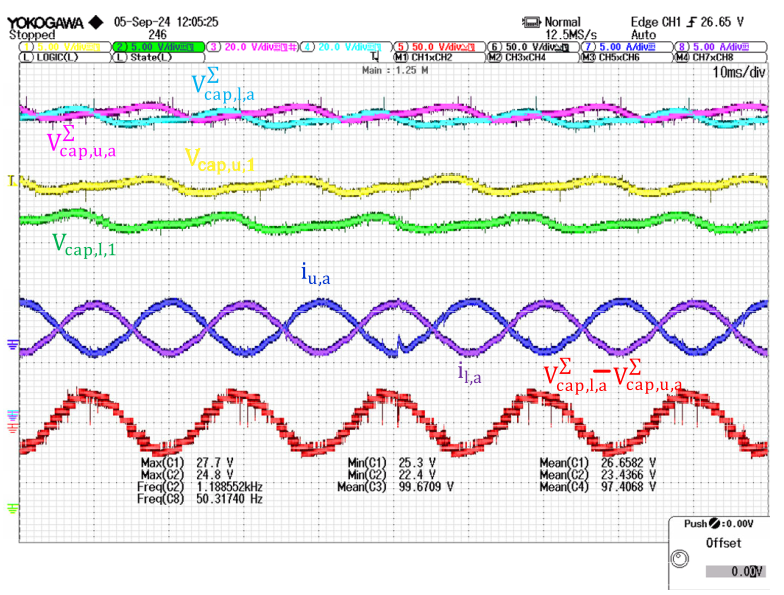

Modular Multilevel Converter (MMC)
Custom MMC hardware built in house for reaseach application.

Project Overview
The MMC was already present but was configured as a half-bridge system. The setup was upgraded to a full-bridge configuration, which involved rewriting the firmware and rewiring the hardware setup. The SM PCB thankfully did not have to be modified.
System Architecture
The proposed MMC consists of SMs, with each phase comprising two identical arms, referred to as upper and lower. In the configuration examined, each arm includes four SMs, yielding a total of 24 SMs for the three-phase system. The arms are interconnected through custom inductors designed to filter arm currents and assist in load-side control. Each SM incorporates a capacitor connected to the DC bus, supporting either a FB or HB topology
Fig. 2 illustrates the top-level interconnection of the MMC tower and its physical implementation in Fig. 1. The central controller—an OPAL-RT OP5600 real-time simulator—executes Simulink models in hardware-in-the-loop (HIL) operation, coordinating all 24 SM controllers and enabling real-time parameter tuning. Each SM’s local controller is implemented using a Xilinx XC95144XL complex programmable logic device (CPLD), programmable via JTAG. Fiber-optic links provide galvanic isolation and mitigate electromagnetic interference (EMI) between the OPAL-RT and CPLDs, while a custom PCB employing the AFBR-1624Z transmitter and AFBR-2624Z receiver performs electrical-to-optical signal conversion.

Each SM receives three fiber optic inputs: one Enable signal and two complementary PWM signals, and returns two outputs: a fault signal and a frequency-modulated PWM that represents the capacitor voltage (Vcap). The modulation is implemented using an LTC6990 chip, which performs both ADC conversion and frequency encoding, thereby reducing circuit complexity and minimizing latency. The OPAL-RT system reconstructs Vcap via a predefined lookup table. To distinguish disconnected cables or failed SMs from a true 0 V condition, a frequency of 0 Hz is reserved for the disconnected state. Examples of measured Vcap values and their corresponding output frequencies for four SMs are shown in Fig. 3.

Analog signals, including arm currents (Iarm), arm voltages (Varm), and DC bus voltage (Vbus), are measured with S-6NP and LEM LV 25-P sensors and interfaced to OPAL-RT via the OP8211 analog module. Furthermore, real-time monitoring and protection for over-temperature or over-voltage fault is implemented. Communication between OPAL-RT and a user PC is handled via Ethernet using UDP/IP. Isolated DC–DC converters power the SMs and sensors, and circuit breakers are included for safety.
Submodule Design
Each SM includes a main board and a capacitor board, illustrated in Fig. 4. The main board uses a PS219B4-S power module with integrated drivers, protection, and temperature sensing, supporting both FB and HB operation via the CPLD. The capacitor board contains the bus capacitor and discharge resistors, and a simplified schematic is shown in Fig. 5. To ensure proper thermal management, a heatsink is mounted on top of the PM and secured using a torque wrench, ensuring consistent clamping force and enhanced reliability.


Hardware Protection
External SM-level circuits monitor overcurrent, capacitor overvoltage, and PM overtemperature, as shown in Fig. 6. Hysteresis logic outputs a high signal during normal operation and a low signal when a fault is detected, ensuring fail-safe behavior even with loose or disconnected connections. Faults are indicated by LEDs and routed to the CPLD, which can disable PWM signals when required. Overcurrent protection directly disables the power module, bypassing the CPLD. The LED fault indications are summarized in Table 1.
The LED fault indications are summarized in Table 1.
| Condition | Fault LED | Safe LED |
|---|---|---|
| Submodule Overcurrent | Continuously ON | OFF |
| Capacitor Overvoltage | Blinks at 1 Hz | OFF |
| PM Overtemperature | Blinks at 10 Hz | OFF |
| Normal Operation | OFF | ON |
Dead-Time Generation
The power module (PM) does not include built-in dead-time control. Instead of generating four PWM signals from the OPAL-RT, dead-time generation is implemented in the CPLD, which produces complementary PWM outputs with configurable dead-time from two input signals.
Dead-time is created using an external crystal oscillator and programmable logic in the CPLD. The oscillator clock is divided by a factor K, and a shift register advances one bit on each rising clock edge, shifting values through positions up to Qn.
AND gates together with the Enable signal control the complementary output generation, as summarized in Table 2.
| Condition on Shift Register Bits | PWMupper | PWMlower |
|---|---|---|
| All Qi = 1 | HIGH | LOW |
| All Qi = 0 | LOW | HIGH |
| Otherwise | LOW | LOW |
When the input PWM changes state, the shift register requires N − 1 clock cycles to realign its bits. During this interval both outputs remain LOW, creating the required dead-time. The resulting signal is combined with the Enable input from OPAL-RT to disable both PWM outputs during this period, as illustrated in Fig. 7.
A dedicated debug connector provides access to key signals for troubleshooting, while isolated power supplies ensure electrical separation between SMs.
Central Controller
The MMC prototype operates according to the parameters summarized in Table 2, which lists the nominal and maximum ratings of key system quantities. The physical MMC is controlled by an independent central system, which runs a Simulink-based controller in OPAL-RT.
| Symbols | Item | Value | Max§ |
|---|---|---|---|
| N | Number of SMs | 4 | - |
| Vdc | Pole-to-pole DC voltage | 100 V | 800 V |
| VSM | Applied IGBT Voltage | 25 V | 200 V |
| CSM | SM capacitance | 4 mF* | - |
| Larm | Arm Inductance | 4.3 mH | - |
| Rarm (R) | Arm resistance | 0.178 Ω‡ | - |
| fsw (PSC) | Switching frequency | 1000 Hz | 10 kHz |
| fControl (NLM) | Transition rate of controller | 1500 Hz | 10 kHz |
§ Maximum rated value of the prototype.
* It can be redesigned as it is a separate PCB attachable to the main SM board.
‡ Estimated resistance of the arm inductor at 50 Hz and rated operating condition.
As shown in Fig. 6, communication between the SMs and the central controller uses digital HP1 and HP2 gate signals, an Enable signal, and analog current and voltage measurements.
The general control block diagram of the MMC is shown in Fig. 9. It reads these signals, provides the user interface, and sends control outputs such as de-gating and protection enable signals to the SMs.
Digital inputs are converted to actual values using lookup tables; for example, received frequencies are mapped to corresponding control values for automation.
The controller is based on this book shown below in references. It includes an output current controller that manages the output active and reactive powers, a total energy controller, and an imbalance controller that balances the energy storage within each SM and between the upper and lower arms. A circulating current controller is employed to suppress the circulating current. The outputs of the circulating current controller and the outer current controller are combined to generate the insertion indices. These indices produce the digital gating signals by applying various modulation strategies.

Results
As a demonstration, the prototype was tested and validated under the conditions outlined in Table 3. The prototype operates in inverter mode (DC to AC) and is connected to a resistive load, as shown in Fig. 2. The results are presented for the FB configuration, where two modulation strategies—Phase Shift Carrier (PSC) and Nearest Level Mode (NLM) — were tested. Fig. 9 display the AC and DC side voltage and current waveforms for NLM and PSC modulation, respectively.


Further experimental results are presented in Fig. 10(a) and (b) for NLM and PSC, respectively. The arm currents for the upper and lower arm of phase A, the currents (iu,a, il,a), a single SM capacitor voltage (Vcap,u,1, Vcap,l,1), the summation of capacitor voltages (Vcap,u,a∑, Vcap,l,a∑) and the difference between them are presented. As can be observed, the NLM modulation strategy performs better in balancing the energy between all the SMs and between the upper and lower arms.


References
Book: MMC HVDC Grids: For Offshore and Supergrid of the Future | SpringerLink